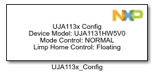
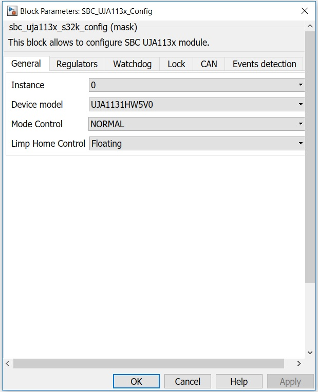
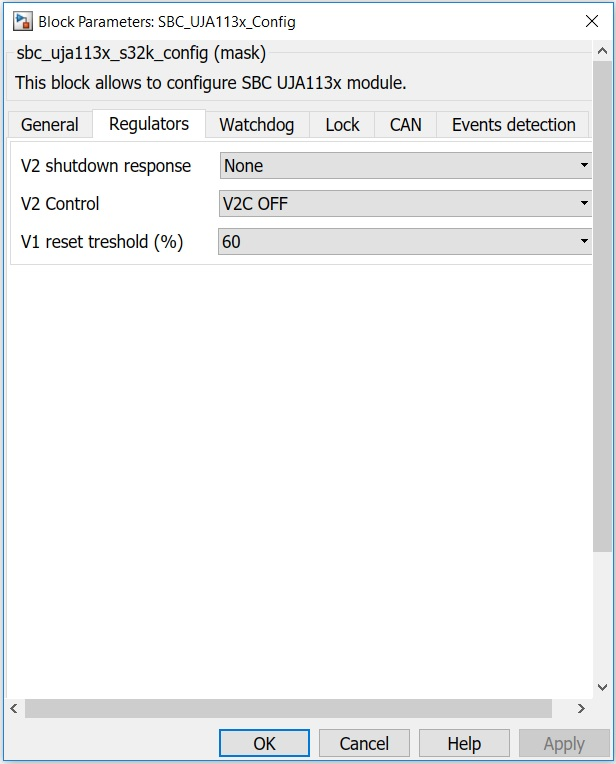
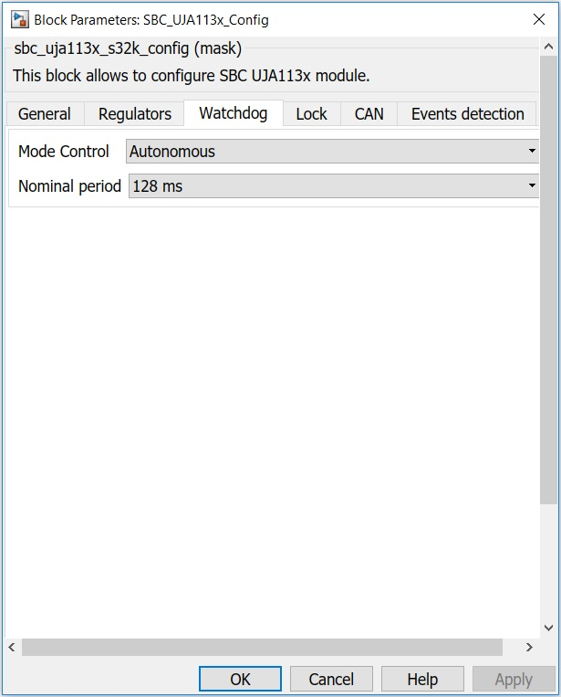
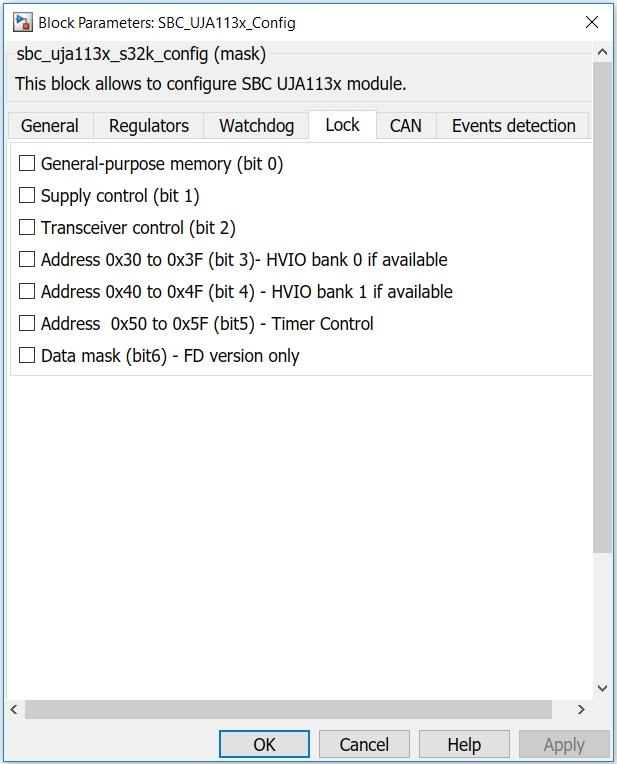
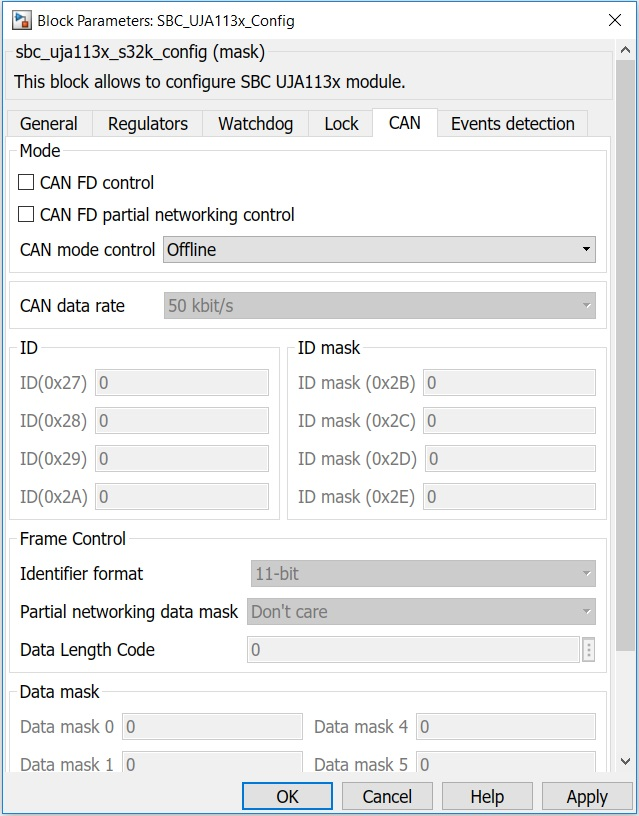

SBC UJA113x Configuration Block
This block allows the user to configure SBC UJA113x module.
Block Image
Inputs:
- None
Outputs:
- None
Parameters and Dialog Box
The block dialog consists of the following tabs:
General
Instance
Index of SBC to configure
Device model
Selection of SBC model from UJA113x family.
Mode Control
Selects the SBC operating mode.
Normal mode is the active SBC operating mode. In this mode, the SBC is fully operational and all onboard hardware can be activated.
Standby mode is a low-power mode in which regulator V1 is switched on.
Sleep mode is a low-power mode similar to Standby mode. V1 is switched off in Sleep mode.
Limp Home Control
The LIMP pin can be used to enable so called ‘limp home’ hardware in the event of an ECU failure. Detectable failure conditions include SBC overtemperature events, loss of watchdog service, short circuits on pins RSTN or V1 and user-initiated or external reset events.The LIMP pin is a battery-related, active-LOW, open-drain output.
Regulators
V2 shutdown response
Configuration of V2 shutdown response to a baterry undervoltage or overvoltage
No shut-down
Shut-down on undervoltage.
Shut-down on overvoltage.
Shut-down on under/ overvoltage.
V2 Control
V1 reset threshold (%)
Sets the V1 reset threshold.
Watchdog
Mode control
The UJA113x contains a watchdog that supports three operation modes:
In Window mode (available only in SBC Normal mode), a watchdog trigger event within a closed watchdog window resets the watchdog timer.
In Timeout mode, the watchdog runs continuously and can be reset at any time within the time-out time by a watchdog trigger. Watchdog Timeout mode can also be used for cyclic wake-up of the microcontroller
In Autonomous mode, the watchdog can be off or in Timeout mode.
Nominal period
Eight watchdog periods are supported, from 8 ms to 4096 ms.
Lock
Sections of the register address area can be write-protected to protect against unintended modifications. It only protects locked bits from being modified via the SPI and will not prevent the UJA113xupdating status registers. For each section, if the box is checked, SPI write access is disabled, otherwise SPI write access is enabled.
CAN
Mode
According to the device model selected, there are available one or more of the following selections:
If checked, CAN FD tolerance is enabled, otherwise is disabled.
If checked, CAN selective wake-up is enabled.
Configuration of CAN transceiver operating mode.
Partial networking allows nodes in a CAN network to be selectively activated in response to dedicated wake-up frames (WUF). Only nodes that are functionally required are active on the bus while the other nodes remain in a low-power mode until needed. If both CAN wake-up (CWE = 1) and CAN selective wake-up (CPNC = 1) are enabled, and the partial networking registers are configured correctly (PNCOK = 1), the transceiver monitors the bus for dedicated CAN wake-up frames.
CAN data rate
Available data rate selections in kbit/s.
ID
ID registers, identifier format (0x27 to 0x2A).
ID mask
An ID mask can be defined to allow a group of identifiers to be recognized as valid by an individual node. The identifier mask is defined in the ID mask registers, where a 1 means 'don't care'.
Identifier format
Partial networking data mask
Data Length Code
Number of data bytes expected in a CAN frame(from0 to 8).
Data mask
The data field indicates the nodes to be woken up.Within the data field, groups of nodes can be predefined and associated with bits in a data mask. By comparing the incoming data field with the data mask, multiple groups of nodes can be woken up simultaneously with a single wake-up message.
Events detection

The following events detection can be enabled:
Supply events
Transceiver events
System events
Wake pin events
Block Dependency
- Configure the Target Configuration block.
- Configure the LPSPI Configuration block.
Block Miscellaneous Details
- None